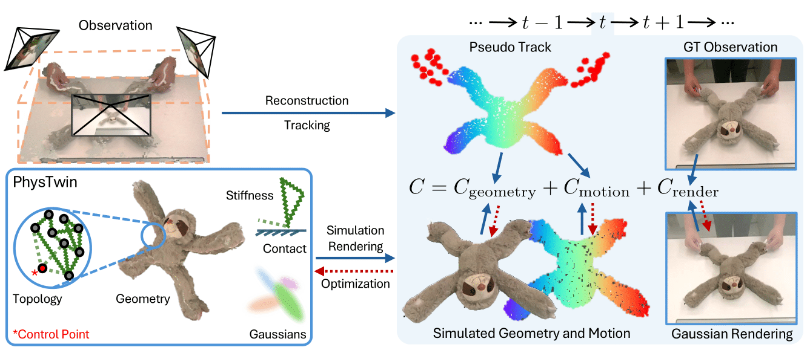

📃PhysTwin 리뷰

이 논문은 동적 객체의 물리 기반 디지털 트윈(PhysTwin)을 생성하는 새로운 프레임워크를 제시합니다. PhysTwin은 로봇 공학, 콘텐츠 제작, 확장 현실(XR) 분야에서 현실 세계 객체를 모델링하고 미래 상태를 시뮬레이션하는 데 중요한 역할을 할 수 있습니다. 이 프레임워크는 상호 작용 중인 변형 가능한 객체의 희소한 비디오로부터 완전한 geometry, 고화질 appearance, 정확한 physical parameter를 갖춘 시뮬레이션 가능한 디지털 트윈을 재구성합니다.
- 📦 PhysTwin은 상호 작용 하에서 변형 가능한 객체의 스파스 비디오로부터 사실적인 디지털 트윈을 재구성하고 시뮬레이션하는 새로운 프레임워크입니다.
- 🤖 이 프레임워크는 미래 상태를 정확하게 예측하고 보이지 않는 액션으로 일반화되는 객체 상호 작용을 시뮬레이션하는 데 탁월합니다.
- ✨ PhysTwin은 고속 시뮬레이션과 정확한 미래 예측을 요구하는 다양한 다운스트림 작업을 가능하게 하며 로봇 조작에 대한 귀중한 통찰력을 제공합니다.
1 Brief Review
핵심 방법론
PhysTwin은 다음과 같은 두 가지 핵심 요소로 구성됩니다.
Physics-informed representation: spring-mass model을 사용하여 realistic physical simulation을 수행하고, generative shape model을 사용하여 geometry를 생성하며, Gaussian splat을 사용하여 렌더링합니다. Spring-mass model은 변형 가능한 객체를 spring으로 연결된 mass node의 집합으로 표현하며, Newtonian dynamics에 따라 시간이 지남에 따라 진화합니다. Gaussian splat은 object appearance를 모델링하는 데 사용됩니다.
Multi-stage, optimization-based inverse modeling framework: 비디오로부터 완전한 geometry를 재구성하고, dense physical parameter를 추론하며, realistic appearance를 복제합니다. 이 프레임워크는 inverse physics framework와 visual perception cue를 통합하여 부분적으로 가려지거나 제한된 시점에서 촬영된 비디오에서도 고화질 재구성이 가능하도록 합니다. Hierarchical sparse-to-dense optimization strategy는 non-differentiable topology 및 sparse physical parameter에 대해 zero-order optimization을 통합하고, dense spring stiffness를 개선하고 collision parameter를 추가로 최적화하기 위해 first-order gradient-based optimization을 사용합니다.
수식
Force on node i:
F_i = \sum_{(i,j) \in E} F_{spring_{i,j}} + F_{dashpot_{i,j}} + F_{ext_i}
Spring force between nodes i and j:
F_{spring_{i,j}} = k_{ij} (||x_j - x_i|| - l_{ij}) \frac{x_j - x_i}{||x_j - x_i||}
Dashpot damping force between nodes i and j:
F_{dashpot_{i,j}} = -\gamma (v_i - v_j)
Dynamic model:
X_{t+1} = f_{\alpha, G_0} (X_t, a_t)
Velocity update:
v_i^{t+1} = \delta (v_i^t + \Delta t \frac{F_i}{m_i})
Position update:
x_i^{t+1} = x_i^t + \Delta t v_i^{t+1}
Overall optimization problem:
\min_{\alpha, G_0, \theta} \sum_{t,i} C(\hat{O}_{t,i}, O_{t,i})
subject to \hat{O}_{t,i} = g_\theta(\hat{X}_t, i), \hat{X}_{t+1} = f_{\alpha, G}(\hat{X}_t, a_t)
Physics and geometry optimization:
\min_{\alpha, G_0} \sum_t (C_{geometry}(\hat{X}_t, X_t) + C_{motion}(\hat{x}_i^t, x_i^t))
subject to \hat{X}_{t+1} = f_{\alpha, G_0}(\hat{X}_t, a_t)
Gaussian kernel transformations
R_i^t = \argmin_{R \in SO(3)} \sum_{j \in N(i)} ||R(\hat{\mu}_j^t - \hat{\mu}_i^t) - (\hat{\mu}_j^{t+1} - \hat{\mu}_i^{t+1})||^2
\mu_j^{t+1} = \sum_{k \in N(j)} w_{jk}^t (R_k^t (\mu_j^t - \hat{\mu}_k^t) + \hat{\mu}_k^t + T_k^t)
q_j^{t+1} = (\sum_{k \in N(j)} w_{jk}^t r_k^t) \otimes q_j^t
w_{jk}^t = \frac{||\mu_j^t - \hat{\mu}_k||^{-1}}{\sum_{k \in N(j)} ||\mu_j^t - \hat{\mu}_k||^{-1}}
Appearance optimization:
\min_{\theta} \sum_{t,i} C_{render}(\hat{I}_{i,t}, I_{i,t})
subject to \hat{I}_{i,t} = g_{\theta}(\hat{X}_t, i)
결과
실험 결과 PhysTwin은 재구성, 렌더링, 미래 예측, 새로운 상호 작용에서의 시뮬레이션 측면에서 기존 방법보다 우수한 성능을 보입니다. 또한, 실시간 상호 작용 시뮬레이션 및 모델 기반 로봇 동작 계획과 같은 응용 분야에서도 효과적인 것으로 나타났습니다. PhysTwin은 로프, 봉제 인형, 천, 배달 패키지 등 다양한 변형 가능한 객체를 모델링할 수 있습니다.
2 Detail Review
PhysTwin: Physics-Informed Reconstruction and Simulation of Deformable Objects from Videos – 심층 리뷰
2.1 서론 (Introduction)
물리적으로 실제와 같은 디지털 트윈(digital twin)을 구축하는 것은 로봇 공학, 콘텐츠 제작, XR 등 다양한 분야에서 중요합니다. 특히 밧줄, 인형, 천과 같은 변형체(deformable object)를 다룰 경우, 디지털 트윈은 객체의 기하학적 형상(geometry), 겉보기 속성(appearance), 그리고 물리적 특성(physical properties)을 정확히 캡처하여 실제 세계와 잘 일치하는 시뮬레이션을 가능하게 해야 합니다. 하지만 제한된 관찰 영상(sparse videos)만으로 이러한 변형체의 디지털 트윈을 만드는 것은 매우 어려운 문제입니다. 기존의 동적 3D 재구성 기법들, 예를 들어 dynamic NeRF나 dynamic 3D Gaussian splatting 기반 방법들은 동영상으로부터 장면의 모양, 움직임, 외형을 고품질로 복원할 수 있었지만, 근본적인 물리 법칙(underlying physics)을 포함하지 않기 때문에 새로운 상호작용 상황을 시뮬레이션하기에는 적합하지 않았습니다. 최근에는 학습 기반으로 물리를 모사하려는 시도도 있었지만, 완전한 초기 3D 스캔이 필요하거나 실제 물리와 어긋난 단순화된 모델을 사용하는 등의 한계가 있었습니다. 예를 들어 2024년의 Spring-Gaus 방법은 물리 모델에서 관성 보존이나 실제 중력과 같은 요소가 빠져 있어 현실성을 떨어뜨렸고, 초기 상태의 전체 형상을 재구성하려면 많은 관측 시야가 필요했습니다.
이러한 한계를 극복하기 위해 2025년 Jiang 등은 PhysTwin이라는 새로운 프레임워크를 제안했습니다. PhysTwin은 상호작용 중인 변형체의 드문 시점 영상(sparse multi-view videos)을 입력으로 받아, 사진처럼 현실적이고 물리적으로 일관된(realistic) 가상 객체를 재구성하며 실시간 상호작용이 가능한 디지털 트윈을 생성합니다. 이 방법의 핵심은 두 가지입니다. 첫째, 물리 지식이 반영된 표현(physics-informed representation)으로, spring-mass model을 이용한 물리 시뮬레이션에 생성적 형상 모델(generative shape model)을 통한 3D 형상 표현과 Gaussian splats를 통한 렌더링 표현을 결합합니다. 둘째, 다단계 최적화 기반 역모델링 절차(multi-stage, optimization-based inverse modeling)로, 영상으로부터 객체의 완전한 3D 형상과 밀도 있는 물리 파라미터를 추론하고, 현실감 있는 외형을 복원합니다. 요약하면, PhysTwin은 시각 정보(visual perception cues)와 역물리 시뮬레이션(inverse physics)을 통합함으로써, 가려지거나 일부만 보이는 상황에서도 높은 완성도의 복원을 이루어냅니다. 이러한 접근을 통해 PhysTwin은 밧줄, 봉제인형, 천, 포장 상자 등 다양한 변형체에 적용 가능하며, 복원된 디지털 트윈을 이용한 재시뮬레이션(resimulation), 미래 상태 예측, 새로운 상호작용 시나리오 시뮬레이션 등에서 기존 방법들을 능가하는 성능을 보였습니다. 더불어 실시간 상호작용 시뮬레이션이나 로봇의 모션 플래닝에 PhysTwin을 활용하는 응용 가능성도 제시되었습니다.
예를 들어, 아래 Figure 1과 같이 PhysTwin은 사람 손으로 물체를 변형시키는 장면이 담긴 몇 개의 동영상을 입력으로 받아서, 해당 물체의 완전한 3D 형태, 정확한 물리 파라미터, 그리고 고품질의 질감을 가진 가상 복제물을 만들어냅니다. 그런 다음 사용자가 키보드나 로봇 인터페이스로 가상 물체를 실시간 조작하거나, 로봇 플래닝에 활용하는 등 다양한 응용이 가능해집니다. (Figure 1: PhysTwin 결과의 개요)
2.2 배경: 디지털 트윈과 변형체 재구성
현실 세계의 동적 장면 재구성(dynamic scene reconstruction)은 오래전부터 도전적인 연구 주제였습니다. 최근 등장한 NeRF(Neural Radiance Fields) 계열 기법이나 3D Gaussian splatting 기법들은 동영상 데이터를 이용해 시간에 따라 변하는 장면의 형태와 색상을 정밀하게 복원할 수 있게 되었습니다. 예를 들어 Dynamic NeRF는 변형 필드를 최적화하여 시간에 따른 3D 장면을 표현하고, Dynamic 3D Gaussian Splatting은 매 프레임 Gaussian 커널들의 위치를 최적화함으로써 장면의 변화를 포착합니다. 그러나 이러한 방법들은 장면의 겉보기와 기하에만 집중할 뿐, 객체가 어떻게 움직이고 힘에 반응하는지 물리적 동역학(dynamics)은 모델링하지 않습니다. 그 결과, 단순히 관찰된 범위 내의 재현(replay)에는 성공하더라도, 사용자가 새롭게 힘을 가하거나 다른 상호작용을 가했을 때 객체가 어떻게 거동할지 예측하거나 시뮬레이션하는 능력이 부족합니다. 다시 말해, action-conditioned 미래 예측이나 상호작용 시뮬레이션에 한계가 있는 것이죠.
한편, 물리 기반 시뮬레이션을 재구성에 활용하려는 연구들도 있었습니다. 시스템 식별을 위해 물리 시뮬레이터를 활용한 방법들은 대개 미리 스캔된 정적 3D 모델 또는 매우 깨끗한 포인트 클라우드 데이터를 필요로 했습니다. 예전 접근법들은 카메라로 얻은 데이터만으로 동시에 3D 형상과 물리 파라미터를 추정하기 어려워, 보통 형상을 별도로 스캔하거나 단순화된 물리 모델을 사용하곤 했습니다. 2024년의 Spring-Mass + Gaussian 방법 (Spring-Gaus)은 영상으로부터 탄성 객체를 복원하려 했지만, 초기 상태에서 객체의 전 표면이 보이는 다수의 시점이 필요했고 물리 모델도 엄밀하지 않아 한계가 있었습니다. 이처럼 기존 방법들은 시각적 정확도와 물리적 정확성을 모두 충족시키지 못하거나, 완전한 입력 정보를 가정해야 했습니다.
PhysTwin은 이러한 배경에서 제안된 것으로, 시각 정보와 물리 시뮬레이션을 긴밀히 결합하여 부분적인 관찰만으로도 물리적으로 충실한 디지털 트윈을 구축하는 최초의 프레임워크 중 하나입니다. 다음으로, PhysTwin의 전체적인 구성과 작동 방식을 살펴보고, 주요 기술 구성 요소들을 단계별로 자세히 리뷰하겠습니다.
2.3 PhysTwin 프레임워크 개요
PhysTwin의 입력으로는 상호작용 중인 변형체를 촬영한 세 개의 RGB-D 카메라 영상(세 시점의 RGB 영상과 깊이 맵 시퀀스)이 주어집니다. 목표는 시간 t=0부터 T까지의 영상 관측 \{I_i^t, D_i^t\}_{i=1..3}으로부터 객체의 기하, 물리, 외형 파라미터를 모두 식별하여, 임의의 새로운 상호작용에 대해서도 현실과 일치하는 동적 거동을 보이는 시뮬레이션 모델을 구축하는 것입니다. 이를 위해 PhysTwin은 다음과 같은 코어 representation을 사용합니다:
- Geometry(기하): 객체를 나타내는 3D 메시(mesh) 혹은 포인트들의 집합 (질점들의 집합).
- Topology(토폴로지): 질점들 간을 연결하는 spring-mass 모델의 구조 (어떤 점들이 스프링으로 연결되는지).
- Physical Parameters(물리 파라미터): 각 스프링의 강성(stiffness) 계수, 감쇠(damping), 충돌 처리 계수, 질점 질량 등 물리 시뮬레이션에 필요한 변수들. 또한 사람 손과 같은 외부 제어점(control point)과 객체를 연결하는 스프링의 속성도 포함됩니다.
- Appearance(외형): 객체의 겉보기 색깔과 질감을 나타내는 표현으로, PhysTwin에서는 다수의 3D Gaussian kernel (Gaussian splat)들로 표현합니다. 각 Gaussian은 공간상의 위치와 크기, 방향성 및 색상, 불투명도 등을 파라미터로 갖는 3차원적인 흐릿한 점으로 이해할 수 있습니다.
이러한 표현을 최적화하기 위해 PhysTwin은 전체 목표 함수를 정의합니다. 시뮬레이터로 예측한 시점 t의 예측 관측과 실제 카메라의 실제 관측 사이의 차이를 최소화하는 것이 목적입니다. 보다 구체적으로, 전체 코스트 함수(cost) \mathcal{C}는 세 가지 항의 합으로 표현됩니다:
\mathcal{C} \;=\; \mathcal{C}_{geometry} + \mathcal{C}_{motion} + \mathcal{C}_{render}
각각 3D 기하 오차(geometry term), 3D 모션/추적 오차(motion term), 그리고 영상 재현 오차(render term)를 의미합니다. 첫 번째 항 \mathcal{C}_{geometry}는 시뮬레이션된 객체 상태와 실제 관찰된 3D 정보 간의 차이를 측정합니다. 예를 들어, 각 프레임에서 카메라 깊이 정보를 모아 얻은 부분적인 3D 포인트 클라우드 P_t와, 동일 시각에 시뮬레이터로 예측한 객체의 질점들 X_t 사이의 챔퍼 거리(Chamfer distance)를 계산하여 형상 간 불일치를 정량화합니다. 두 번째 항 \mathcal{C}_{motion}는 객체 표면의 특징점 움직임을 비교하는데, 비전 파운데이션 모델인 CoTracker를 활용해 영상에서 추적한 2D 점들을 깊이 맵으로 3D 공간에 투영하여 얻은 추적 점 궤적들(pseudo 3D tracks)과 시뮬레이션된 질점들의 궤적을 대응시켜 오차를 계산합니다. 세 번째 항 \mathcal{C}_{render}는 복원된 객체를 렌더링한 결과 영상과 실제 RGB 영상 간의 차이를 측정합니다. 이 항은 주로 객체의 색상, 텍스쳐 등 겉보기 차이를 penalize하며, 구체적인 항목은 후술할 Appearance 최적화 단계에서 정의됩니다.
PhysTwin은 이 목표 함수를 직접 한 번에 최적화하는 대신, 2단계에 걸쳐 최적화를 수행합니다. 첫 번째 단계에서는 주로 geometry와 physical parameters (형상 및 물리 파라미터)에 초점을 맞춰, 객체의 형태와 역학적 거동을 복원합니다. 이 단계에서는 주로 \mathcal{C}_{geometry}와 \mathcal{C}_{motion} 항의 감소에 주력하며, 객체의 정적 3D 형상과 스프링-질점 모델의 물리계수들을 조정합니다. 두 번째 단계에서는 appearance 관련 파라미터들을 최적화하여, 객체의 시각적 품질을 높입니다. 이때 \mathcal{C}_{render} 항을 최소화하는 방향으로 Gaussian 커널들의 색상, 투명도 등을 학습하며, 1단계에서 구한 기하/물리 모델은 고정해 둡니다. Figure 2는 PhysTwin 프레임워크의 개괄적인 구조를 보여주는데, 입력 영상으로부터 얻은 기하/모션 관찰치와 시뮬레이터의 예측을 비교하는 렌더링 손실과 기하/모션 손실로 구성 요소들을 최적화함을 도식적으로 표현하고 있습니다.
Figure 2: PhysTwin 프레임워크 개요 – 카메라 영상으로부터 부분 점군 및 추적 데이터를 얻어내고(오른쪽 상단: Pseudo Track 및 GT Observation), 이를 토대로 PhysTwin의 representation(왼쪽 하단: Geometry, Topology, Physical parameters, Gaussians로 구성)을 최적화합니다. 최적화는 시뮬레이션된 기하/모션 상태(오른쪽 하단)와 영상 관찰치를 비교하는 비용 \mathcal{C} = C_{geometry} + C_{motion} + C_{render}를 줄이는 방향으로 수행됩니다. 이 과정에서 기하/모션 불일치는 Chamfer 거리 등의 지표로 측정되고, 렌더링 불일치는 영상 비교 손실(D-SSIM 등)로 계산됩니다. 최종적으로 물리 시뮬레이터를 통해 예측한 변형체의 거동(Simulated Geometry and Motion)이 실제 영상과 잘 맞아떨어지고, Gaussian splatting을 통해 렌더링한 결과도 실제 영상(GT Observation)에 가까워지도록 학습됩니다.
이제 각 단계를 순차적으로 살펴보겠습니다.
2.4 1단계: 기하 및 물리 파라미터 최적화 (Physics and Geometry Optimization)
첫 단계에서는 객체의 정적 형상과 동적 거동에 관한 물리 파라미터를 복원합니다. 입력으로 주어진 RGB-D 영상들로부터 먼저 얻을 수 있는 정보는 제한적입니다. 각 카메라 뷰에서 매 프레임마다 객체의 일부만 보이기 때문에, 깊이 맵을 점군(point cloud)으로 변환하면 객체 표면의 일부 조각들만 얻어지게 됩니다. 이를 P_t라고 하면 P_t는 시각 t에 관찰된 객체 표면의 부분 집합입니다. 또한 객체 표면 위의 임의의 점들의 움직임을 포착하기 위해, CoTracker로 다수의 특징점을 추적하여 2D 궤적을 얻은 뒤, 해당 점들의 깊이 값을 이용해 3D 공간의 추정 궤적(pseudo-ground-truth tracks) \{T_j(t)\}를 복원합니다. 이렇게 얻은 P_t와 T_j(t)는 PhysTwin의 물리 모델을 맞추기 위한 관찰 데이터로 활용됩니다. 이들을 활용하여 앞서 언급한 \mathcal{C}_{geometry} (예측 형상 vs 관찰 점군 간 차이)와 \mathcal{C}_{motion} (예측 질점 vs 추적 점 궤적 간 차이) 항을 계산하고, 이를 줄이는 방향으로 모델 파라미터를 찾는 것이 1단계의 핵심 목표입니다.
그러나 이 최적화는 몇 가지 난제가 있습니다. 첫째, 관찰은 부분적(partial)이어서 객체의 보이지 않는 뒷면이나 내부 구조를 알 수 없습니다. 둘째, 우리가 최적화해야 할 파라미터들 중 일부는 이산적인(topology) 것들입니다 (예: 어떤 질점들 사이에 스프링을 연결할지 여부 등), 반면 나머지는 연속적인 물리 계수들입니다. 형상(topology)과 물리 파라미터를 동시에 최적화해야 하는데, 이산적 의사결정이 섞여 있어 매우 복잡합니다. 셋째, 객체의 시간에 따른 동적 거동을 길게 시뮬레이션해야 하고, 파라미터 공간 차원도 매우 높기 때문에 (수만 개의 스프링 강성 등) 경사하강법(gradient descent)을 바로 적용하면 지역해에 빠지거나 수렴이 어렵습니다. 또한 물리 시뮬레이션 자체도 충돌 등으로 인해 비연속적 현상(discontinuities)이 존재해 미분 가능한 최적화에 어려움을 줍니다.
PhysTwin은 이러한 문제를 해결하기 위해 geometry와 그 외 물리 파라미터 최적화를 분리하고, 거친 수준에서 세밀한 수준으로 가는 계층적 최적화 전략(hierarchical sparse-to-dense optimization)을 도입합니다. 크게 두 단계로 나뉘는데, 먼저 형상(geometry)을 비교적 정확히 초기화한 뒤, 이를 기반으로 물리 파라미터(토폴로지 및 강성 등)를 1차 조정하고, 이후에 세밀한 파라미터까지 포함하여 최종 미세 조정을 하는 방식입니다. 아래에 그 내용을 순서대로 정리합니다.
2.4.1 (a) 생성적 Shape Prior를 활용한 초기 형상 복원
부분 관찰만으로 객체의 전체 모양을 추정하기 위해, 저자들은 사전 학습된 3D 생성 모델을 활용했습니다. Microsoft의 TRELLIS라는 이미지-투-3D 모델을 사용하여, 첫 번째 카메라 뷰의 RGB 이미지에 기반한 형상 priors를 얻었습니다. 먼저 각 영상에서 Segment Anything Model (SAM)을 기반으로 객체의 마스크를 얻고, 해당 객체 부위 이미지를 초해상(super-resolution) 모델로 고해상도로 업스케일링합니다. 그 이미지를 TRELLIS에 입력하면, 객체의 전체 3D 메쉬를 생성해줍니다. 이는 마치 “이런 이미지를 가진 물체라면 3D 형태는 이럴 것이다”라고 사전에 학습된 지식을 활용해 추측하는 과정입니다. 이렇게 얻은 초기 메쉬는 실제 관찰과 대략적인 형태 유사성은 있지만, 정확한 크기(scale)나 위치(pose), 세부 변형(deformation) 면에서 차이가 있을 수 있습니다.
이를 보완하기 위해 정합(registration) 모듈을 설계하여 초기 메쉬를 실제 관찰 데이터에 맞게 정렬합니다. 먼저, 특징 매칭 알고리즘인 SuperGlue를 통해 초기 메쉬의 가상 투영과 실제 이미지 간 2D 특징점 대응을 찾아 카메라 회전(orientation)을 추정합니다. 이는 PnP(Perspective-n-Point) 방법으로 세밀히 보정됩니다. 다음으로, 대응되는 3D 점 쌍 간 거리를 카메라 좌표계에서 맞추는 최적화를 통해 스케일(scale)과 평행이동(translation) 불일치를 해결합니다. 이후 메쉬를 실제 관찰에 최대한 맞추기 위해 ARAP (As-Rigid-As-Possible) 변형 알고리즘을 적용, 큰 형태는 유지하면서도 세부적으로 메쉬를 관찰 점군에 밀착시키도록 변형합니다. 마지막으로 레이캐스팅 정합(ray-casting alignment) 단계에서는 카메라에서 본 실제 점들이 메쉬 표면에 정확히 닿도록 미세 조정하여, occlusion 없이 관찰된 점들이 메쉬에 맵핑되게 합니다. 이러한 일련의 정합 과정을 거치면 초기 프레임의 관찰치에 정렬된 전체 형상 메쉬를 얻을 수 있고, 이는 이후 물리 및 appearance 최적화의 중요한 초기값(initialization)으로 활용됩니다.
요약하면, PhysTwin은 학습 기반 3D 생성(prior)과 전통적 정합 알고리즘을 조합하여, 부분 관찰 → 완전한 초기 형상으로 복원하는 단계를 수행합니다. 이를 통해 얻어진 메쉬의 버텍스들(vertex)는 곧바로 우리 질점-스프링 모델의 질점들이 됩니다. 이로써 아직 보지 못한 영역까지 포함된 객체의 “canonical” 상태를 정의하고 (보통 초기 프레임 상태를 정준 상태로 사용), 물리 시뮬레이션의 기반으로 삼을 수 있습니다.
2.4.2 (b) 스프링-질점 모델 구성과 계층적 물리 파라미터 최적화
초기 형상이 마련되었으므로, 이제 이 메쉬를 물리 시뮬레이터가 다룰 수 있는 형태로 변환해야 합니다. PhysTwin에서는 메쉬의 기하를 spring-mass 모델로 표현합니다. 메쉬의 각 버텍스는 질량을 가진 질점(mass node)으로 취급되고, 이들 사이를 가상 스프링으로 연결하여 물체의 탄성 거동을 모델링합니다. 스프링 연결은 메쉬의 인접 관계를 그대로 사용할 수도 있지만, 저자들은 일반적인 적용을 위해 단순히 최근접 이웃 기반으로 연결하도록 했습니다. 즉, 일정 거리(radius) 이내에서 가장 가까운 몇몇(max neighbors로 제한) 점들끼리 스프링으로 연결하여 토폴로지를 형성합니다. 이렇게 하면 메쉬의 삼각형 구조에 얽매이지 않고도 유연한 그래프 형태의 스프링망을 구축할 수 있고, radius와 최대 이웃 수 파라미터로 스프링 밀도를 조절할 수 있습니다.
또한 상호작용을 모사하기 위해 제어점(control point) 개념을 도입합니다. 예를 들어 사람이 물체를 손으로 잡아당기는 경우, 손의 위치를 나타내는 외부 제어점을 정의하고, 이 제어점과 객체 표면의 질점들을 스프링으로 연결하면 손이 끄는 힘을 시뮬레이션할 수 있습니다. PhysTwin에서는 영상에서 손 부위를 Grounded-SAM으로 분리(segmentation)하고, CoTracker로 손의 움직임을 추적하여 3D 궤적을 얻은 뒤, Farthest Point Sampling으로 적절히 간격을 둔 몇 개의 제어점을 취합니다. 그리고 마찬가지로 반경-이웃 기반으로 각 제어점을 객체 질점들과 연결하는 스프링들을 추가했습니다. 이로써 외력이 가해지는 지점과 객체 사이의 연결관계까지 포함한 완전한 spring-mass 물리 모델의 구조가 결정됩니다.
정리하면, 현재까지 우리는: (i) 객체 질점의 초기 위치 (정렬된 전체 형상), (ii) 질점들 간 스프링 연결 구조 및 초기 물리 파라미터 (강성, 감쇠 등), (iii) 제어점과의 연결 등을 정의했습니다. 이제 남은 것은 이러한 파라미터 값을 실제 객체의 거동에 맞게 최적화(추정)하는 것입니다. 최적화해야 할 파라미터로는 각 스프링의 강성 계수(k)와 댐핑 계수(c), 스프링의 rest length(평균길이) 보정, 충돌 처리 파라미터 등이 있습니다. 이들은 모두 연속적인 실수 값들로 볼 수 있지만, 앞서 언급한 radius나 max neighbors 같은 토폴로지 설정값은 이산적으로 간주됩니다. 전체 파라미터 수는 잠재적으로 매우 크며 (수천~수만 개 수준), 일반적인 gradient descent를 적용하기엔 부담이 큽니다.
PhysTwin은 이를 위해 2단계 계층적 최적화를 사용했습니다: 먼저 저해상도 파라미터 공간에서 탐색한 후, 점차 고해상도(세밀한) 파라미터로 refinement하는 방식입니다. 구체적으로, 초기 단계에서는 모든 스프링의 강성을 동일한 값으로 가정(균일 강성)하고, 토폴로지 밀도나 충돌 계수 등 몇 안 되는 대표 파라미터만을 대상으로 zero-order 최적화(미분 없이 가능한 탐색 기반 최적화)를 수행합니다. 여기서 말하는 zero-order 최적화란, 예를 들어 파라미터 조합을 샘플링하여 시뮬레이션 결과와 관찰치의 차이를 평가하면서 조금씩 탐색해나가는 방법으로, gradient를 직접 쓰지 않아도 되므로 미분 불가능한 변수들도 다룰 수 있습니다. 이 단계에서 radius나 neighbor 수와 같은 토폴로지 설정, 그리고 전체 강성의 크기 등을 적절히 찾아내면, 시뮬레이터가 대략 관찰된 움직임을 따라가게 됩니다.
다음으로 세부 단계에서는, 위에서 얻은 초기값을 기반으로 각 스프링마다 강성이 달라지는 밀도 있는 파라미터 공간(dense parameter space)을 일阶 미분 가능한 방식(first-order gradient descent)으로 최적화합니다. 이를 위해 PhysTwin은 커스텀 differentiable spring-mass simulator를 구현하였습니다. 시뮬레이터는 주어진 물리 파라미터에 따라 시간 발달을 계산할 뿐 아니라, 목표 코스트 \mathcal{C}_{geometry} + \mathcal{C}_{motion}에 대한 파라미터의 gradient를 계산할 수 있습니다. 따라서 이 단계에서는 모든 스프링들의 k_{ij} (강성) 값을 개별적으로 조정하고, 충돌 처리 계수 등 연속 파라미터들도 함께 미세 조정합니다. 그 결과, 시뮬레이션 예측이 관찰 데이터와 훨씬 정밀하게 맞아떨어지도록 파라미터가 보정됩니다. 특히 이 과정에서 앞서 계산한 3D 추적 점(코Tracker 기반)들이 일종의 지도 신호(supervision) 역할을 톡톡히 합니다. 추적점들은 객체 표면의 여러 지점이 시간에 따라 어떻게 움직였는지를 알려주므로, 물리 파라미터 최적화 시 해당 지점들의 시뮬레이션 궤적이 실제 궤적과 가까워지도록 유도합니다. 이는 부분 관찰의 한계를 보완해 주는 추가 단서로 작용하여, 효율적이고 정확한 역동학 파라미터 추정을 가능케 합니다.
以上 과정을 통해, PhysTwin의 1단계 최적화는 객체의 형상과 동역학 모델을 영상에 부합하게 만들어 줍니다. 구체적으로는, 우리의 spring-mass 시스템 내 질점들의 초기 배치가 실제 객체의 초기 형상과 일치하고, 시뮬레이터에 정의된 물리 파라미터로 인해 객체를 움직이면 (예: 손 제어점에 실제 영상에서 가해졌던 힘을 재연하면) 시뮬레이션 결과가 영상 속 실제 객체의 움직임과 잘 맞게 됩니다. 즉, 역물리(inverse physics) 문제를 풀어내어, 관찰된 거동을 모사하는 물리적으로 일치하는 모델을 얻은 것입니다.
참고로, PhysTwin의 spring-mass 물리 시뮬레이션 자체는 뉴턴 역학에 충실하게 따릅니다. 각 질점 i에 작용하는 힘 F_i는 연결된 이웃 질점 j들과의 스프링 힘 및 댐핑 힘의 합으로 계산됩니다. 스프링 힘은 훅의 법칙에 따라 F_{spring} = k_{ij} (||x_i - x_j|| - L_{ij}) 형태로 작용하여 질점들 간 거리가 rest length로부터 벗어날 경우 복원력이 발생하고, dashpot 댐핑 힘 F_{damping} = -c_{ij}(v_i - v_j)은 상대 속도의 차이를 줄이는 방향으로 운동에 저항력을 부여합니다. 여기에 중력이나 충돌, 외부 제어점(예: 손 위치 변화에 의한 힘) 등으로 인한 외력 F_{ext}까지 합산하여 각 질점의 최종 힘을 계산합니다. 그런 다음 이 힘을 이용해 explicit Euler integration 방식으로 각 질점의 가속도, 속도, 위치를 시간 t \to t+\Delta t로 갱신합니다. 이러한 시뮬레이션은 질량-스프링 시스템의 운동량 보존, 에너지 감쇠, 충돌 반발 등을 정확히 재현하므로, Spring-Gaus 등이 간과했던 실제 물리적 거동을 보다 사실적으로 모사합니다. PhysTwin 구현에서는 NVIDIA Warp 라이브러리를 활용하여 이 모든 계산을 GPU에서 효율적으로 수행하였고, 이는 뒤에 소개할 실시간 상호작용 시뮬레이션을 가능케 하는 기반이 되었습니다.
2.5 2단계: Appearance 최적화 (Appearance Optimization)
1단계 최적화를 거친 후에는 객체의 형상 구조와 물리 파라미터(geometry & physics)가 확정됩니다. 이제 남은 과제는 겉보기(appearance)를 복원하여, 시뮬레이션된 객체를 화면에 렌더링했을 때 원본 영상처럼 보이도록 만드는 것입니다. PhysTwin은 appearance 복원을 위해 NeRF 대신 3D Gaussian splatting을 채택한 점이 특징적입니다. Gaussian splatting은 다수의 3D Gaussian 커널 (흐릿한 입자들)을 배치하고 각자 색과 투명도를 부여하여 합성 렌더링하는 기법으로, 복잡한 기하 형태나 광원 모델링 없이도 실시간에 가까운 고속 렌더링이 가능하다는 장점이 있습니다. 특히 2023년 이후로 Gaussian splat 기반의 신경방사장 기법들이 등장하면서, NeRF 대비 훨씬 빠른 렌더링이 가능해져 주목받았습니다. PhysTwin에서는 이 아이디어를 받아들여, 복원한 객체 표면을 덮는 정지된 3D Gaussian들의 집합으로 appearance를 표현합니다.
우선, Gaussian 커널들의 파라미터를 정의해야 합니다. 각각의 Gaussian G_n은 다음과 같은 속성을 지닙니다: 중심 위치 \mathbf{p}_n = (x,y,z), 방향을 나타내는 회전 q_n (quaternion 형태), 크기를 나타내는 스케일 벡터 \mathbf{s}_n = (s_x,s_y,s_z), 투명도(alpha) \alpha_n, 그리고 색상 계수 c_n (RGB 값). 초기에는 이 Gaussian들을 객체의 표면을 따라서 일정한 간격으로 분포시키고, 색상은 임의값이나 평균색으로 설정합니다 (논문에서는 초기화에 대한 상세 언급은 없지만, 보통 영상 기준으로 색을 뿌리거나 합니다). 그런 다음 appearance 최적화에서는 이러한 Gaussian들의 파라미터를 조정하여 렌더링 손실 \mathcal{C}_{render}를 최소화합니다. 렌더링 손실은 카메라 뷰로 Gaussian들을 투영하여 얻은 합성 영상과 실제 RGB 영상 간의 차이를 측정하는데, 단순 픽셀 L2 오차 대신 D-SSIM (Differentiable Structural Similarity) 지표를 활용했습니다. SSIM은 구조적 유사도를 평가하는 지표로, 인간 시각에 더 근접한 비교를 제공하며, D-SSIM은 그 미분 가능한 변형입니다. 이를 이용해 렌더된 이미지와 실제 이미지 사이의 차이를 계산하고, 이 값을 줄이는 방향으로 각 Gaussian의 색과 위치 등을 업데이트합니다. 효율성을 위해 이 최적화는 여러 프레임에 대해 하는 대신 첫 번째 프레임에 대해서만 수행되었습니다. 이는 객체의 외형이 시간에 따라 바뀌지 않는다고 가정할 수 있기 때문에, 한 프레임 (가장 가려짐이 적은 프레임을 선택)만으로도 충분히 색상을 맞출 수 있다는 아이디어입니다. 이렇게 하면 계산량을 크게 줄이면서도 전체 외형 품질을 확보할 수 있습니다.
Gaussian 기반 표현을 사용할 때 주의할 점은, 나중에 객체가 변형될 때 Gaussian들이 어색한 잔상을 남기지 않아야 한다는 것입니다. 이를 위해 저자들은 Gaussian들의 형상을 등방성(isotropic)으로 제한하였습니다. 즉, 각 Gaussian의 스케일 행렬이 구(球) 형태가 되도록 강제하여, 어떤 특정 방향으로 찌르는(spiky) 모양을 가지지 못하게 합니다. 이렇게 해야 나중에 객체가 움직여도 Gaussian들이 국소적으로 뾰족하게 찢어지는 아티팩트를 방지할 수 있습니다. 결국 2단계 최적화를 마치면 객체 초기 상태에 대한 시각적으로 그럴듯한 Gaussian 분포가 완성됩니다.
이제 마지막으로 남은 문제는, 객체가 변형될 때 appearance를 어떻게 업데이트할 것인가 입니다. 1단계의 물리 모델을 통해 임의의 새로운 힘이나 움직임에 대한 질점들의 변위는 결정되겠지만, Gaussian들은 그저 공간상의 점들이므로, 질점들이 움직였을 때 함께 따라 움직여야 일관된 렌더링이 가능합니다. PhysTwin은 이를 위해 Linear Blend Skinning (LBS)이라는 전통적 그래픽스 기법을 활용했습니다. LBS는 주로 캐릭터 애니메이션에서 본(bone)에 붙은 피부를 움직일 때 쓰이는 방식인데, 여기서는 질점들이 일종의 “본” 역할을, Gaussian들이 “피부의 점” 역할을 합니다. 각 Gaussian G_n에 대해 가까운 몇 개의 질점들을 찾아 가중치를 할당합니다. 그리고 시뮬레이션 시 각 프레임마다 질점들이 새로운 위치 X_t로 이동하면, G_n의 중심 \mathbf{p}_n도 그 질점들의 움직임을 보간한 위치로 옮겨주고, 회전 q_n도 질점 움직임에 따라 조정해줍니다. 이렇게 하면 객체가 변형되어도 Gaussian들이 객체 표면에 붙어있는 듯이 함께 변형됩니다. 요약하면, appearance는 1단계에서 얻은 물리 모델에 종속되도록 설계하여, 시간에 따른 일관성을 확보한 것입니다.
이로써 PhysTwin이 생성한 디지털 트윈은 완성됩니다. 1단계의 spring-mass 모델은 물리적으로 현실적인 동역학을 재현하고, 2단계의 Gaussian splats는 시각적으로 그럴듯한 영상 재현을 보장합니다. 최종 모델은 새로운 초기 조건이나 외력에 대해서 시뮬레이션을 수행할 수 있으며, 그 결과를 렌더링해서 마치 실제 영상을 보는 것처럼 출력할 수 있습니다.
2.6 PhysTwin의 성과와 응용
PhysTwin이 복원한 디지털 트윈의 정확도는 다양한 실험을 통해 입증되었습니다. 저자들의 평가에 따르면, PhysTwin은 제한된 시점의 입력만 가지고도 실제 객체의 형상과 물리 특성을 잘 캡처하여, 재구성 정확도(reconstruction)와 새로운 시점에서의 렌더링 품질(rendering), 미래 상태 예측(future prediction), 그리고 새 상호작용에 대한 시뮬레이션 등에서 기존 방법들보다 우수한 결과를 보였습니다. 예를 들어 PhysTwin으로 복원한 모델에 이전에 없던 힘을 가하거나 새로운 방식으로 변형시키는 실험에서, Spring-Gaus 등의 과거 방법보다 실제 물체의 반응을 더 그럴듯하게 예측해냈습니다. 다양한 객체 타입(유연한 로프부터 탄성이 있는 봉제인형, 옷감, 심지어 단단한 택배 상자까지)에 대해 이러한 성능을 보여 범용성도 확인되었습니다.
무엇보다 PhysTwin의 큰 장점 중 하나는 시뮬레이션 속도입니다. GPU 가속을 통해 spring-mass 물리 시뮬레이션과 Gaussian 렌더링을 실시간에 가깝게 수행할 수 있으므로, 복원된 모델을 이용한 인터랙티브 시뮬레이션이 가능합니다. 사용자가 키보드로 가상 손을 움직이며 물체를 잡아당기는 등의 조작을 하면, PhysTwin의 객체도 즉각 반응하여 변형되고 화면에 렌더링되어 보여집니다. 논문에서는 사람이 로봇 팔을 원격 조작(teleoperation)할 때 PhysTwin이 실시간으로 객체의 미래 상태를 예측하여 화면에 겹쳐 보여주는 데모를 통해, 이러한 기능이 로봇 작업시 피드백 도구로 활용될 수 있음을 보여주었습니다. 또한 복원된 디지털 트윈은 로봇의 모델 기반 플래닝에 바로 활용될 수 있습니다. 예컨대 로봇이 유연한 밧줄을 특정 모양으로 움직이고자 할 때, PhysTwin으로 얻은 동적 모델을 시뮬레이터로 사용하여 다양한 동작 시도들을 가상환경에서 시험해보고 최적의 계획을 세울 수 있습니다. 이런 모델 예측 제어(MPC)나 강화학습과 결합하면, 물체를 실제로 다루기 전에 가상으로 여러 시나리오를 신속히 테스트해볼 수 있어 효율적인 로봇 조작이 가능해집니다.
마지막으로, PhysTwin의 기술적 기여를 정리해보면 다음과 같습니다:
- 부분 관찰 영상만으로 완전한 객체 형상을 복원하기 위해 사전 학습된 생성 모델을 효과적으로 활용하고, 전통 기법과 결합해 정밀한 초기 shape을 얻었습니다.
- Spring-Mass 물리 모델을 디지털 트윈에 통합하여, 현실 물리 법칙(뉴턴 역학, 충돌, 중력 등)이 반영된 시뮬레이션을 가능하게 했습니다. 이를 통해 단순 보간이 아닌 원인-결과에 기반한 객체 거동 예측이 가능해졌습니다.
- 다단계 최적화(framework)를 고안하여, 이산적 토폴로지 결정과 연속적 물리 파라미터 추정을 순차적으로 해결하였습니다. 특히 zero-order + differentiable simulation을 결합한 계층적 최적화 전략으로 거대한 파라미터 공간을 효과적으로 탐색했습니다.
- Segment Anything, CoTracker 등의 비전 기반 파운데이션 모델을 활용하여, 추가적인 지도 신호(객체 마스크, 3D 추적점)를 얻고 이를 코스트 함수에 통합함으로써 데이터 부족과 최적화 난이도를 극복했습니다.
- Gaussian splatting 기반 표현을 도입하여, 복잡한 라이팅 없이도 객체의 appearance를 사실적으로 복원하고 실시간 렌더링을 실현했습니다. 또한 LBS를 통해 변형 시 일관된 텍스처 대응을 유지하도록 함으로써, 시각적 품질과 물리적 일관성을 모두 잡았습니다.
PhysTwin은 시각적 재구성과 물리 시뮬레이션의 가교 역할을 함으로써, 로봇 상호작용이나 가상현실 등에서 현실 세계의 물체를 더 잘 모방하고 예측하는 방향으로 한 걸음 나아갔다는 평가를 받습니다. 향후 더 다양한 객체나 유체와 같은 복잡한 재질에도 이러한 물리-학습 결합 방식이 확장될 수 있을 것이며, 인간과 상호작용하는 가상 환경 구성에도 기여할 수 있을 것으로 기대됩니다.